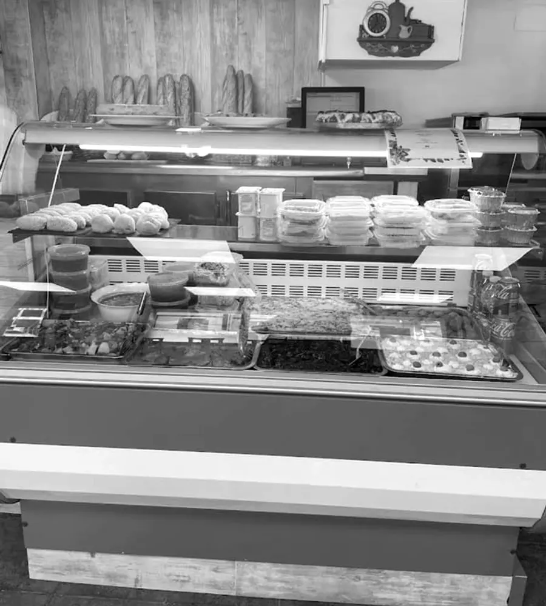
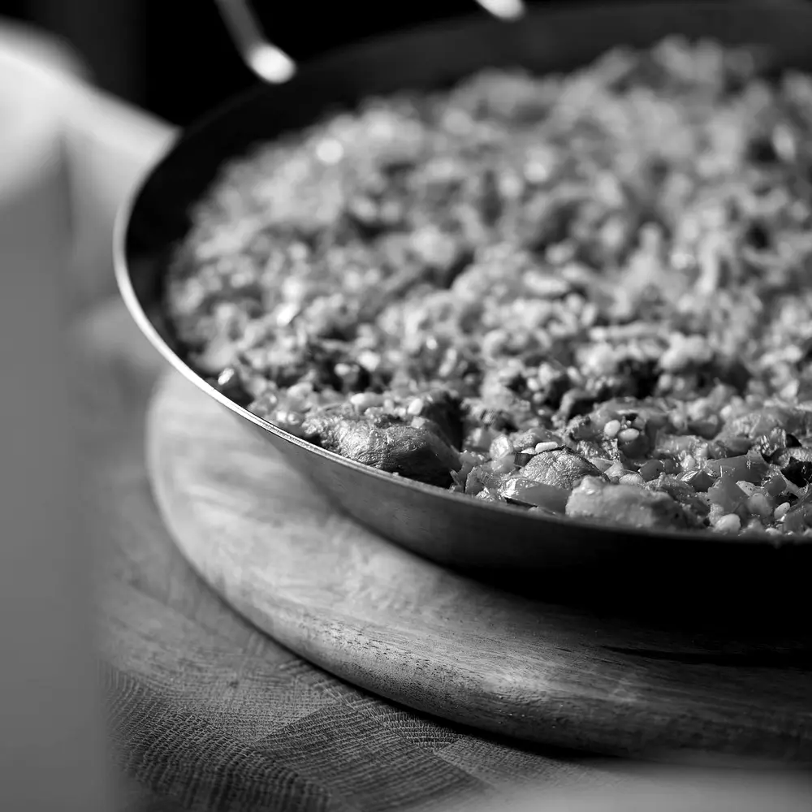

Casera
de origen local
a fuego lento
para llevar
¡Hola! Somos las cocineras. Nos acabamos de mudar al barrio, pero es como si lleváramos aquí toda la vida. Nuestra comida siempre será casera, de origen local, cocinada a fuego lento y servida con una cálida sonrisa. Bienvenidos a casa.
Nuestra selección
- 01Desayunos en tarroPara llevar y tomar donde quieras.
- 02Comidas abundantesPlatos tradicionales con ingredientes frescos, al estilo de casa.
- 03Postres caserosTradicionales y sanos, en envases individuales para llevar.
- 04Comidas para gruposMenús personalizados para cada tipo de evento.
Cómo reservar el menú
- LlamarReserva por teléfonoEl menú de tres platos —primero, segundo y postre, a precio fijo— al 943 38 40 80 o por WhatsApp.
- RecogidaPasa por el localY llévatelo para comer en casa o en el trabajo.
- LlevarLista para llevarEn envases reciclables.
4,9
★ · 57 opiniones en Google
LocalMandoegi 2, bajo A · Errenteria
Teléfono943 38 40 80
WhatsApp603 11 29 55
CorreoHartajan184@gmail.com
HorarioLunes a sábado, 9:30–15:30